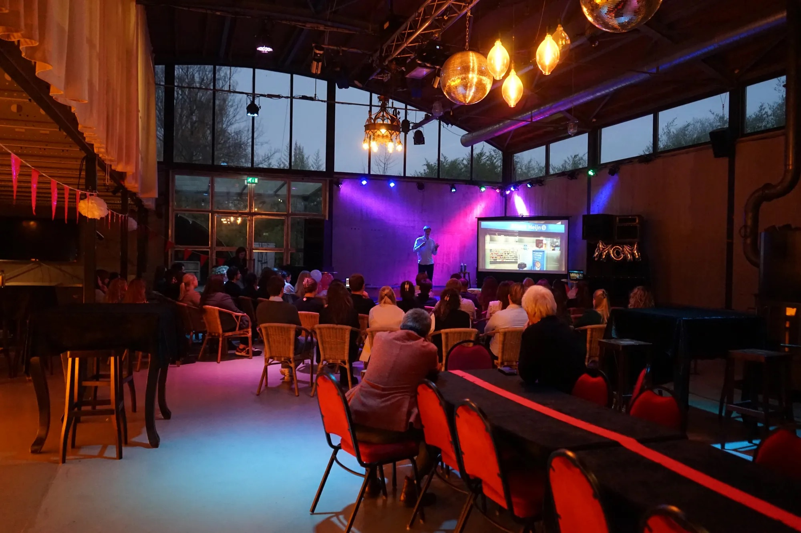

Freelance Brand Researcher
Nick van der Klein, MSc.
Marketing Management & Analytics
Drie jaar ervaring als brand health en strategie researcher bij Unravel.
Diepgaande kennis uit de werken van Byron Sharp, zoals *How Brands Grow*.
Mijn werk is gebaseerd op strategische inzichten die de merkgezondheid en het groeipotentieel versterken. Hier zijn enkele visuele voorbeelden van mijn aanpak.
Neem contact op via nick@example.com
Of volg me op LinkedIn.